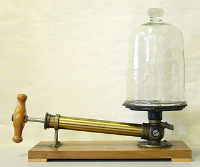

Vacuum in space
A perfect vacuum means that a region in space where there are no particles. This is not achievable though, but we
can
get very close to it. A good example of coming close to a perfect vacuum is space. Pressure is measured in pascals
(Pa),
but we will use “particles per cubic meters” as our unit of measurement. In space, on average there are 0.3 atoms
per
cubic meter, which is not much, so there are no particles that we can push against, and we will not experience any
pressure.
See moreé